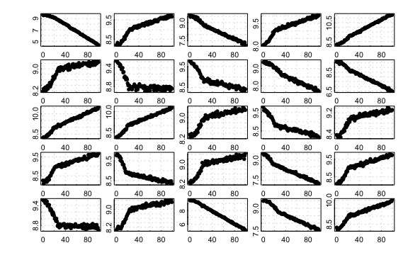
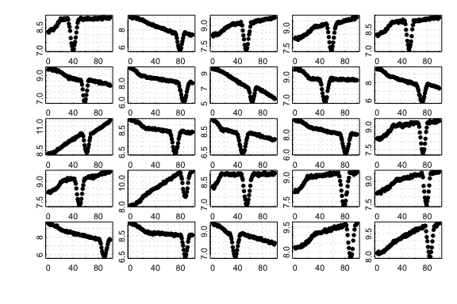
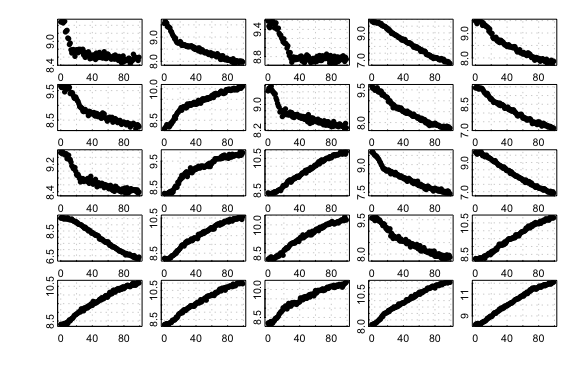
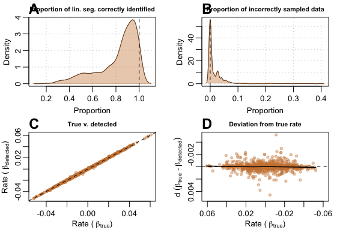
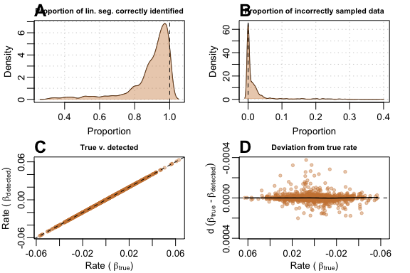
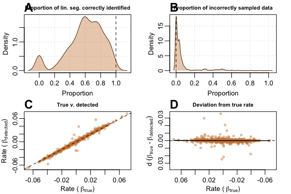
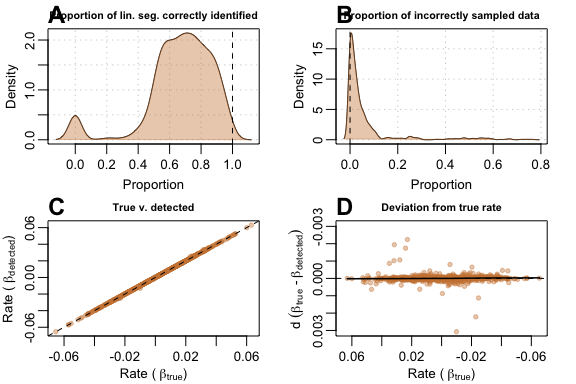
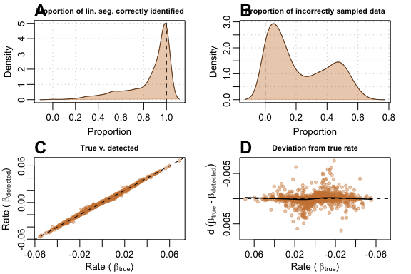
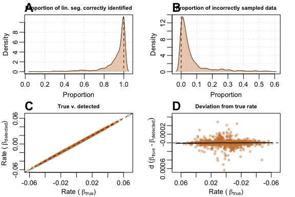

auto_rate: Performance in detecting linear regions
Source:vignettes/archive/auto_rate_performance.Rmd
auto_rate_performance.RmdNote
This page has been archived and will not be updated. This is
because it was submitted as part of the publication of
respR in Methods in Ecology and Evolution, and has been
retained unchanged for reference. Any results and code outputs shown are
from respR v1.1 code. Subsequent updates to
respR should produce the same or very similar results.
Introduction
The function auto_rate uses rolling regression and
kernel density estimation techniques to automatically detect the
most linear regions in respirometry data. The dimensionless
nature of the function, however, also allows it to be applied to any
serial data.
To our knowledge, the methods we use here are novel, and not reported
in past publications involving linear data detection and analysis of
biological data. Olito et
al. (2016) describes a different, though robust, method to detect
and rank linear segments in data using their R package,
LoLinR. A comparison of auto_rate and
LoLinR’s methods are shown here.
The performance tests that we present here are limited but
comprehensive, and provide a starting point in generating the data
necessary for users to make informed decisions on using and further
testing auto_rate for their own purposes. Users
should be aware that noisy, strongly fluctuating data could
cause unpredictable, unwanted results to be returned. For example, while
we have had generally good results with our own data, intermittent flow
respirometry data where O2 is fluctuating up and down between periods of
use by the specimens and flushing the respirometry chamber are likely to
confuse the algorithms. Users should always examine the outputs of
auto_rate (and indeed other functions in
respR) to understand where returned results occur within
the data and that they are representative of the question of interest.
We have made this as easy as possible, and designed the package
specifically to not be a ‘black box’ and at every stage make the user
aware of what is going on through plotting results and their locations
in the context of the entire datasets, and in the console outputs.
Testing the linear detection method of auto_rate
To ensure that auto_rate performs as intended, we
created two internal functions designed to test the accuracy of our KDE
techniques to detect linear data. The first function,
sim_data(), generates a random dataset which contains both
linear and non-linear segments. The second function,
test_lin(), specifically performs auto_rate
repeatedly on randomly generated data and aggregates the performance
metrics obtained to assess and visualise the accuracy of the KDE
technique. Both functions are published with the respR
package, thus anyone can use them – as we show below – or run them with
their own input paramters.
Generating simulated data for tests
sim_data() is used to randomly generate three kinds of
data based on the type argument, which we briefly describe
below. It accepts inputs to customise the length of the data (no. of
samples), the type of data (described below), the degree of noise as
specified by the standard deviation of the data (default 0.05), and a
preview toggle to plot and visualise the simulated dataset.
“Default” data
sim_data(type = "default")
A non-linear segment is first generated using a sine or cosine
function with a random length of
floor(abs(rnorm(1, .25*len, .05*len))), where
len is the total number of observations in the data defined
in the function argument, and a random amplitude of
rnorm(1, .8, .05). This data segment is appended to a
linear segment with a randomly-generated slope computed using
rnorm(1, 0, 0.02). The shape of the dataset is designed to
mimic common respirometry data whereby the initial sections of the data
are often non-linear. Here we show 25 randomly-generated plots created
by the type:

25 randomly generated default-type simulated datasets
“Corrupted” data
sim_data(type = "corrupted")
Same as "default", but “corrupted” data is inserted
randomly at any point in the linear segment. The data corruption is
depicted by a sudden dip in the reading, which recovers. This event
mimics equipment interference that does not necessarily invalidate the
dataset if the corrupted section is omitted from analysis. The dip is
generated by a cosine function of fixed amplitude of 1, and the length
is randomly generated using
floor(rnorm(1, .25 * len_x, .02 * len_x)), where
len_x is the length of the linear segment.
Thus, to detect the valid linear segment, auto_rate will
need to omit the initial non-linear segment, ignore the dip, and then
pick the longer of the 2 remaining linear segments that are separated by
the dip. Here we show 25 randomly-generated plots created by the
type:

25 randomly generated corrupted-type simulated datasets
“Segmented” data
sim_data(type = "segmented")
Same as "default", but the data is modified to contain
two linear segments. The slope of the second linear segment is randomly
chosen at approximately
0.5
to
0.6
of the first linear segment (i.e the slope is always a magnitude smaller
than the first linear segment).
Thus, to detect the correct linear segment, auto_rate
would need to correctly omit the initial non-linear segment, and also,
ignore the end segment of the data as it has a different slope. Here we
show 25 randomly-generated plots created by the type:

25 randomly generated segmented-type simulated datasets
Test conditions
To quantify the performance and accuracy of auto_rate’s
linear detection technique, the function test_lin() runs
the linear detection technique (method = "linear")
iteratively and extracts specific output parameter for analysis. The
parameters include:
- The length of the true segment ();
- The length of the detected segment that is correctly sampled (). Here, we also call such data “true”;
- The length of the detected segment that is incorrectly sampled (). Here, we also call such data “other”;
- The slope of the true segment (, or true rate); and
- The slope of the detected segment (, or detected rate).
From the above data, we can generate four kinds of performance metrics for visualisation:
- A density plot of the proportion of the linear segment correctly identified. Each data point is a measure of .
- A density plot of the proportion of incorrectly-sampled data. Each data point is a measure of .
- A linear regression plot, where each data point is a measure of of (y) as a function of (x);
- An x-y plot of the deviation between and . Each data point is a measure of .
We performed test_lin() with 1,000 iterations, for all
of the three kinds of data produced by sim_data()
("default", "corrupted", and "segmented"). To
check performance on different data lengths, we repeated the tests using
100, 200 and 500 data points. The output of our performance test is
avaliable from within the package as a data object called
test_lin_data.
# NOTE: Functions take some time to run
# Test on data of length 100 samples -------------------------------------------
# This performs 1,000 iterations of auto_rate on a "default"-type data
set.seed(123)
default100 <- test_lin(reps = 1000, len = 100, type = "default")
# This performs 1,000 iterations of auto_rate on a "corrupted"-type data
set.seed(456)
corrupted100 <- test_lin(reps = 1000, len = 100, type = "corrupted")
# This performs 1,000 iterations of auto_rate on a "segmented"-type data
set.seed(789)
segmented100 <- test_lin(reps = 1000, len = 100, type = "segmented")
# Test on data of length 200 samples -------------------------------------------
# This performs 1,000 iterations of auto_rate on a "default"-type data
set.seed(123)
default200 <- test_lin(reps = 1000, len = 200, type = "default")
# This performs 1,000 iterations of auto_rate on a "corrupted"-type data
set.seed(456)
corrupted200 <- test_lin(reps = 1000, len = 200, type = "corrupted")
# This performs 1,000 iterations of auto_rate on a "segmented"-type data
set.seed(789)
segmented200 <- test_lin(reps = 1000, len = 200, type = "segmented")
# Test on data of length 500 samples -------------------------------------------
# This performs 1,000 iterations of auto_rate on a "default"-type data
set.seed(123)
default500 <- test_lin(reps = 1000, len = 500, type = "default")
# This performs 100 iterations of auto_rate on a "corrupted"-type data
set.seed(456)
corrupted500 <- test_lin(reps = 1000, len = 500, type = "corrupted")
# This performs 100 iterations of auto_rate on a "segmented"-type data
set.seed(789)
segmented500 <- test_lin(reps = 1000, len = 500, type = "segmented")How do I know if the tests are actually running and detecting segments?
test_lin() can perform tests in a very cool and visual
way – at the cost of speed. The argument plot, when set to
TRUE, can show us exactly the detected segments at every iteration. Try
it!
# Try this code below. WARNING: Will run and plot visuals 20 times.
x <- test_lin(reps = 20, len = 500, type = "segmented", plot = TRUE)Results
“Default” data
Results were very encouraging; when run on data with 100 samples,
(A) auto_rate correctly detected a large
proportion of the true segment in general, and (B)
incorrectly sampled only a small amount of other data.
(C) Comparison of
against
showed very stable detection across all slopes, even when slope values
approached zero. This was evident in (D) where roughly,
the maximum
values had
deviation from the
values across all values of
,
even for values close to zero:
plot(test_lin_data$default100)
Performance metrics for auto_rate on default-type data with 100 samples
Tests on larger sample data sizes of 200 and 500 revealed that
auto_rate performed better when provided with bigger data.
When used on data with 500 samples, auto_rate generally
(A) detected a larger proportion of the true data and
(B) was less prone to sampling incorrect portions of
the data. (C) Linear regression had a
of 0.999, and (D) deviation was
10
smaller than when sample size was at 100:
plot(test_lin_data$default500)
Performance metrics for auto_rate on default-type data with 500 samples
“Corrupted” data
In this challenging data scenario auto_rate had a
tendency to under-sample the linear segment. As this particular type of
data consisted of two linear segments separated by a “dip”, the function
also sometimes (A) detected the shorter segment as the
top-ranked result, resulting in the correct estimate of
,
but the wrong linear segment detected. Thus, the function may
incorrectly sample none of the linear segment (B), but
only rarely; in most cases, it still identified the right segment, and
incorrectly sampled only a small amount of data. (C)
Comparison of
against
showed stable, but relatively noisy detection of the true rate across
all slopes when compared to its performance with “default”-type data.
(D) The deviation plot showed that performance was
genrally poorer at values close to zero.
plot(test_lin_data$corrupted100)
Performance metrics for auto_rate on corrupted-type data with 100 samples
Again, auto_rate performed better when provided with
bigger data. At 500 samples the same issue where the shorter linear
segment was incorrectly selected still persisted (A),
but (B) the function sampled incorrect segments less
often, (C) linear regression of
against
had a better goodness of fit and (D) deviation values
from
were substantially smaller with seemingly fewer poor estimates when
slope values approach zero.
plot(test_lin_data$corrupted500)
Performance metrics for auto_rate on corrupted-type data with 500 samples
“Segmented” data
This type of data is the most difficult to handle as
auto_rate needed to disregard the curved, but
increasingly-linear top portion of the data, and also discard the slight
degree of change in slope towards the end of the data. Thus,
auto_rate performed well in many cases, but poorly in
others. In the majority of cases, (A) when it managed
to sample the linear segment, it did so for a very large fraction of the
data. (B) It performed less well at avoiding incorrect
sampling, since it sometimes selected the other linear segment. However,
(C) the plot of
against
showed that it still performed surprisingly well most of the time,
despite the errors, and (D) the deviance from the true
rate appeared to be poorer when slope values are closer to zero.
plot(test_lin_data$segmented100)
Performance metrics for auto_rate on segmented-type data with 100 samples
Again, with a larger dataset, auto_rate’s performance
was substantially better. With a 500-sample dataset, many of the issues
that occured in the previous test were better resolved. The function
(A) correctly sampled the right segment most of the
time, and rarely sampled other data or the other linear segment
(B). (C) Linear regression of
against
had a
of 0.999, and (D) deviations from
were much smaller in magnitude.
plot(test_lin_data$segmented500)
Performance metrics for auto_rate on segmented-type data with 500 samples
We did not report any of the results for 200-sample size datasets,
but users are free to call the data object test_lin_data
and plot the results, or run their own analyses using the functions we
provide.
Summary
In this limited testing on relatively small datasets, we have shown
that on datasets of around 100 records in length auto_rate
performs quite well, although with some occurrences of data
mis-characterisation. However, when datasets are around 500 in length
its performance is radically improved. This pattern holds across our
three test data types characteristic of respirometry data:
"default" (non-linear to linear data segments),
"corrupted" (data with an obvious erroneous drop-out), and
"segmented" (non-linear to multiple linear segments). The
use of auto_rate on datasets larger than this is likely to
be even more accurate in identifying valid linear regions of data.
Despite the overall good performance, this does serve to illustrate
that users should always inspect and explore their data, and the results
of analyses for obvious errors and that the results are characteristic
and valid answers to the question they are asking of the data. We have
this made this as straightforward as possible in respR
through always outputting by default plots with results highlighted in
the context of the entire datasets, and useful summary output in the
console. There is also extensive support for exploring data and results
via the base R plot(), print() and
summary() functions.
References
Olito, C., White, C. R., Marshall, D. J., & Barneche, D. R. (2017). Estimating monotonic rates from biological data using local linear regression. The Journal of Experimental Biology, jeb.148775-jeb.148775. http://doi.org/10.1242/jeb.148775